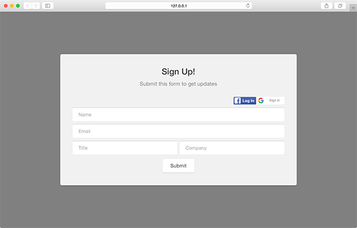

Gate modules provide an approach for requiring data collection or user identification. This type of module prevents users from viewing content or navigating until some sort of data has been collected and processed. These modules are highly effective when promoting white papers or other online materials that are not to be freely available.
var module = pathfora.SiteGate({
id: 'my-gate-module-id',
headline: 'My Headline Text',
msg: 'My message text here.'
});
pathfora.initializeWidgets([ module ]);
Gate
Gate modules will remain hidden once the user has submitted their information once. A cookie PathforaUnlocked_[id of module] is created to save this status so that the user has access to the gated content as long as their cookies persist.
SiteGate - Live Preview

showSocialLogin
With social login enabled, a module can show Google or Facebook login buttons which the user can use to connect to their account. This will autofill the form elements with their account information such as name and email. This setting requires authentication with integrateWithFacebook or integrateWithGoogle.
showSocialLogin boolean |
|
| Value | Behavior |
|---|---|
| false | default do not show social login buttons |
| true | show social login buttons |
Social Login /w Google & Facebook - Live Preview

showForm
By default the a gate module includes a form, with this setting it can be hidden for a text-only gated widget.
showForm boolean |
|
| Value | Behavior |
|---|---|
| true | default show the gated form |
| false | hide the form for a text-only gated widget |
Text-only Gate - Live Preview